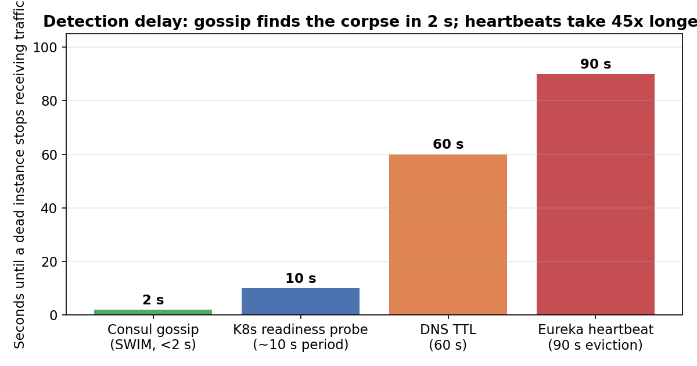
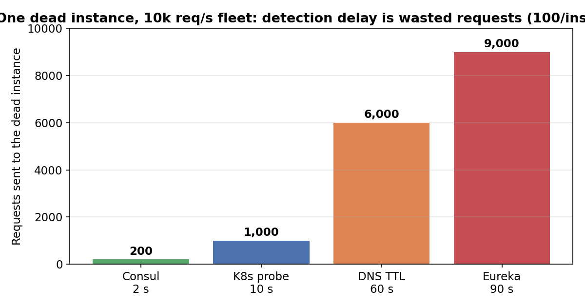
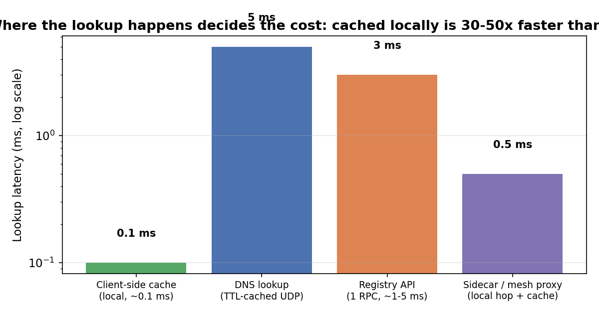
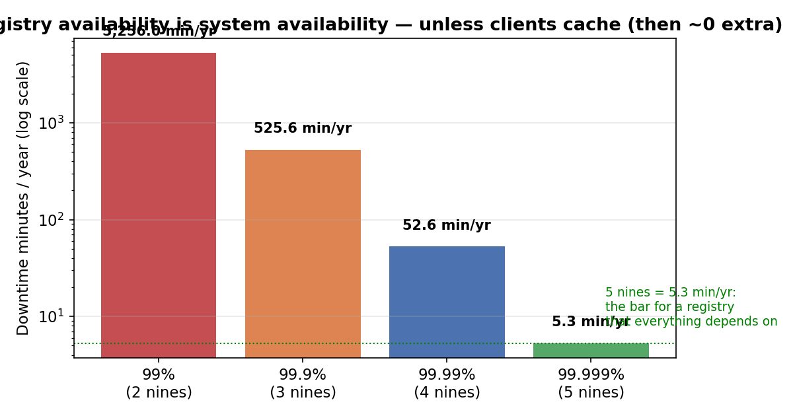

Your checkout service needs to talk to your payments service. Payments has 47 instances spread across three availability zones, and three of them restarted in the last hour — one for a deploy, one for a crash, one because an autoscaler added capacity. Checkout does not know any of their IP addresses, because the IPs change every time an instance restarts. So how does checkout find a live payments instance, and — the harder question — how does it stop talking to the one that died 40 seconds ago?
That is service discovery, and it is the phone book of distributed systems — except the phone book rewrites itself every few seconds, and a wrong number costs you real requests. This is Season 2, Part 8. The benchmark hook today is detection delay as wasted requests: the difference between finding a dead instance in 2 seconds and finding it in 90 seconds is 45x more failed requests, and the fix is a design choice, not a bigger box.
The ELI5 version
Imagine a city where every restaurant moves to a new address every day, and some of them close without telling anyone. A phone book printed once a year is useless. You need three things: a way for a restaurant to announce "I opened at this address" (registration), a way to notice "that restaurant closed and nobody told us" (health checking), and a way for a hungry person to ask "where is the nearest open Thai place right now?" (lookup). Service discovery is those three things, for servers instead of restaurants. Registration is easy. Lookup is a solved problem. Health checking — noticing the dead ones fast enough — is where systems actually break.
The three parts
Registration. When an instance starts, it tells the registry who it is: service name, address, port, health endpoint, metadata like version and zone. There are two ways to do it. In self-registration, the instance calls the registry itself on startup — simple, but a buggy instance can forget, register twice, or register with the wrong address. In third-party registration, something else does it on the instance's behalf: in Kubernetes, the EndpointSlice controller lists every pod matching a Service's selector that passes its readiness probe. Third-party registration cannot be forgotten by a buggy instance, but it only knows what the platform knows.
Health checking. A registry needs to remove instances that crash without deregistering, and the common tool is a lease with a TTL: the entry lives until now-plus-TTL, and each heartbeat pushes the expiry forward. Eureka clients renew every 30 seconds and the server evicts an instance after 90 seconds without a renewal. Consul runs an agent on every node that runs health checks locally — HTTP, TCP, gRPC, TTL, or script — and reports a status of passing, warning, or critical; liveness of the agents themselves is tracked with gossip, the SWIM protocol from Part 7. A health status also lets an instance be listed but excluded from traffic, for warm-up or graceful shutdown — a state a dead-or-alive binary cannot express.
Lookup. Callers get the list and pick an instance. Server-side discovery means the caller sends to a stable name or virtual IP and something in the middle picks: a Kubernetes ClusterIP Service works this way, with kube-proxy programming iptables rules on every node. Client-side discovery means the caller fetches the instance list and balances in the caller, which lets the client make latency-aware, zone-aware decisions. The trade is simplicity against control — and, as the numbers below show, against lookup cost.
The benchmark hook: detection delay is wasted requests
Here is the arithmetic that decides your design. Take a fleet of 100 payments instances handling 10,000 requests a second, spread evenly: 100 requests a second per instance. One instance dies. Every request routed to it until detection removes it is wasted — a timeout, a retry, a failed checkout.


The spread is the story: Consul's gossip detects the failure in under 2 seconds across 10,000 nodes and wastes 200 requests; Eureka's 30-second heartbeat with 90-second eviction wastes 9,000 — 45x more. And the mean detection time for the heartbeat design is not 90 seconds, it is about 75: the crash lands uniformly inside the 30-second heartbeat interval, so on average 15 seconds of heartbeat credit are already banked when the instance dies. The notebook's Monte Carlo confirms it — mean 75.0 s, p99 89.7 s — against gossip's mean 2.0 s. The eviction timeout, not the heartbeat interval, dominates. If you can only tune one number, tune the eviction timeout down, not the heartbeat up.
The same arithmetic scales to the whole fleet. With 1,000 instances and 5 restarts a minute, the expected number of stale entries sitting in the registry is churn rate times detection delay — and a random lookup hits one with probability stale over total. At 90-second detection, 7.5 stale entries are listed at any moment and 0.75% of lookups — 7,500 per million — hit a dead instance. At 2-second detection, it is 0.17 stale entries and 0.017%. Then retries multiply it: a client that retries a dead instance 3 times before trying the next one turns 0.75% stale lookups into 3% of all attempts spent on the dead path. Detect fast, fail fast, retry once.
The registries, compared
Four designs dominate, and they split on one question: when the network partitions, do you stay available or stay consistent?
| Registry | Consensus | CAP | Health checks | Detection |
|---|---|---|---|---|
| ZooKeeper | ZAB | CP | Session heartbeats | Session timeout (~10–30 s) |
| etcd | Raft | CP | Leases (TTL) | Lease expiry (TTL, often ~10 s) |
| Consul | Raft (servers) + gossip (agents) | CP servers + AP agents | HTTP, TCP, gRPC, TTL, script | Gossip, <2 s at 10k nodes |
| Eureka | Peer-to-peer async | AP | Client heartbeat | 30 s heartbeat, 90 s eviction |
ZooKeeper is the original coordinator — Kafka, HBase, and Solr run on it — but its API is old and its health model is session heartbeats. etcd is Kubernetes' brain: a Raft-consistent key-value store where every pod, service, and secret lives, and health is a lease with a TTL that auto-expires and notifies watchers. Consul is the only one on the list built specifically for service discovery from day one — registry plus health checking plus KV plus multi-datacenter federation — and it is the only one that splits the problem in two: Raft among a small set of servers for consistency, gossip among agents on every node for failure detection. Eureka is deliberately AP: it stays available during partitions and lets clients cache the registry locally, refreshing every 30 seconds, accepting that the list is eventually consistent. Netflix chose availability over freshness, and the 90-second eviction is the price.
DNS is the fifth option and the oldest: register services as DNS records and let user-service.internal resolve to healthy IPs. It is simple, universal, and has one killer problem — TTL caching. A 60-second TTL means a dead instance keeps receiving traffic for up to 60 seconds after it dies, and no health check is built in; you have to layer one on top. Kubernetes (CoreDNS), Consul's DNS interface, and Route 53 all use it, and all of them add health checking and faster propagation on top. DNS alone is a phone book printed once a minute.
Where the lookup happens decides the cost

A design-round walkthrough for a Consul-like system at 5,000 services and 100,000 instances, serving 1M lookups a second, makes the same point from the capacity side: the lookups are almost all served from client cache, and the health-check load — about 10,000 checks a second — is carried by local agents, not a central server. Client-side caching with server push (watch/subscribe) is the standard answer to the lookup problem: lookups under 1 ms locally, changes propagated in under 5 seconds, and the registry's availability stops being the system's availability. That last point is the availability arithmetic that matters most.
The availability arithmetic: the registry is a single point of failure unless it isn't
If discovery is down, no service can call another — so the registry's availability is the system's availability, unless clients cache. The downtime table is unforgiving: 99% availability is 5,259.6 minutes a year; 99.9% is 526.0; 99.99% is 52.6; 99.999% is 5.26. A registry at three nines hands the whole system 526 minutes a year of discovery downtime — unless every client holds a cached copy of the registry and keeps serving from it while the registry is down. With client-side caching, registry downtime costs ~0 extra: lookups keep working, new registrations wait, and the system degrades to slightly stale data instead of total failure. The design-round's non-functional requirements say it plainly: five-nines availability for the registry, sub-millisecond lookups from cache, and eventual consistency with under-5-second propagation. The cache is what makes five nines achievable — you do not build a five-nines registry, you build a three-nines registry with clients that do not need it minute to minute.

Why it breaks
Stale entries. Every discovery system is eventually consistent, so callers always work from a slightly stale list. The fix is not fresher data — it is coping: retries with backoff, circuit breakers (Part 10), and clients that treat "connection refused" as a signal to re-resolve, not as a failure to report. The registry's job is to make staleness rare; the client's job is to make it harmless.
The health check that lies. An HTTP /health endpoint returning 200 while the database connection pool is exhausted is worse than no check at all: the registry routes traffic to a zombie. Deep health checks — verify the dependency, not just the process — and separate readiness (can I take traffic?) from liveness (am I alive?) the way Kubernetes does. A pod that is alive but not ready is excluded from the list, not restarted.
Thundering herd on restart. When the registry restarts, every client re-fetches at once, and the stampede can take the registry down again. Stagger the refreshes, jitter the TTLs, serve stale data while revalidating. Eureka's clients refreshing every 30 seconds with jitter is the pattern, not an accident.
Split-brain registries. A CP registry (etcd, ZooKeeper, Consul servers) stops accepting writes during a partition so it never lies; an AP registry (Eureka) keeps accepting writes and reconciles later, so it can lie briefly. Both are correct answers to different questions. The wrong answer is a CP registry in a system that needed availability, discovered during the partition.
Discovery outage cost. Industry-average figures for 2025 put a complete discovery outage at 4.2 minutes to detect, 47 minutes to resolve, and about $18,500 a minute in revenue impact — and stale service data, the slowest to notice at 23.1 minutes to detect, at $3,800 a minute. The detection story again: the failure mode you notice slowest is the one that costs you longest.
Interview angle
"Design a service discovery system" is a standard senior interview question, and the expected answer has a shape: registration with leases and TTLs, health checking by local agents (not a central poller — 10,000 checks a second centralizes badly), client-side caching with watch-based push for sub-millisecond lookups, DNS as a compatibility layer with health checks layered on, and a CAP choice stated explicitly (CP for the registry core, AP-tolerant clients with cached data). The numbers to have ready: Eureka's 30/90 heartbeat/eviction, Consul's sub-2-second gossip detection, the 99.999% bar, and the churn-times-delay stale-entry formula. The follow-up the interviewer is waiting for: "what happens when the registry itself is down?" — and the answer is the client cache.
Takeaways
- Discovery is three jobs: registration, health, lookup. Registration is easy; lookup is solved by client-side caching; health checking — noticing the dead ones fast — is where systems break.
- Detection delay is wasted requests. At 10k req/s across 100 instances, gossip wastes 200 requests per dead instance; Eureka-style heartbeats waste 9,000 — 45x more. Mean heartbeat detection is ~75 s, not 90, because the eviction timeout dominates.
- Stale entries scale with churn times delay. At 5 restarts/min and 90 s detection, 0.75% of lookups hit a dead entry; at 2 s it is 0.017%. Retries multiply it — 3 retries turn 0.75% stale into 3% of all attempts.
- Cache the registry on the client. A 99.9% registry hands the system 526 min/yr of downtime unless clients cache; with a cache, registry downtime costs ~0 extra and five nines becomes reachable.
- Health checks must check health. Separate readiness from liveness, verify the dependency and not just the process, and treat connection-refused as "re-resolve", not "fail".
Honesty note: all simulation numbers are this machine's toy-model measurements, not production telemetry — the notebook recomputes them. Field figures cited: Consul gossip under 2 s at 10,000 nodes, Eureka 30 s heartbeat / 90 s eviction (Netflix wiki), etcd Raft leases, Kubernetes EndpointSlice and readiness probes, the 5,000-service / 100,000-instance / 1M-lookup design-round walkthrough, and 2025 industry-average discovery-outage costs (4.2 min to detect, $18,500/min). No Meta content per the standing exclusion.
Companion notebook: service_discovery_health.ipynb — detection-delay math, lease-expiry Monte Carlo, availability arithmetic, stale-entry probability, and retry amplification, all exec-tested.
Next in the series: Season 2, Part 9 — Distributed Locking. Follow the dev.to profile for the next part.